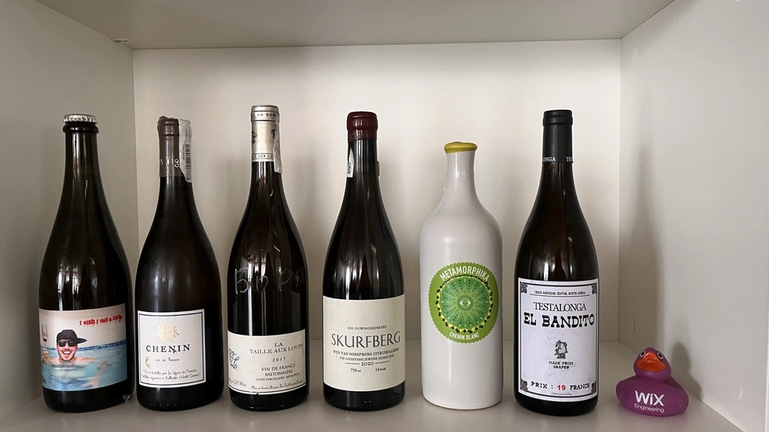
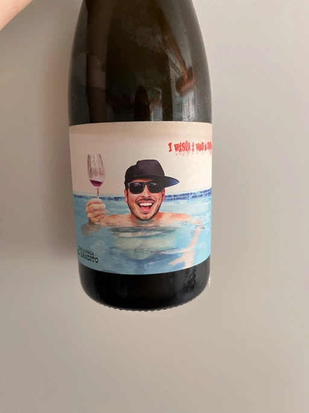
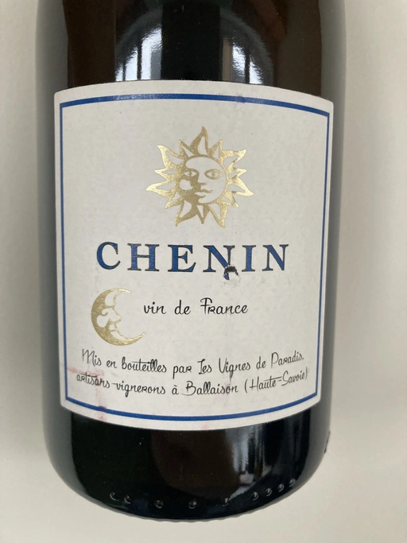
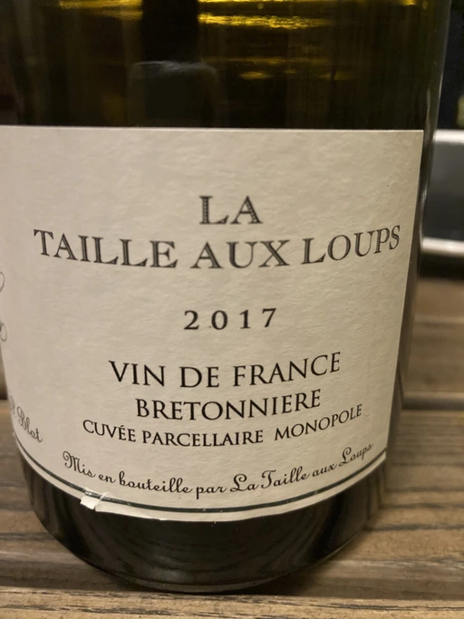
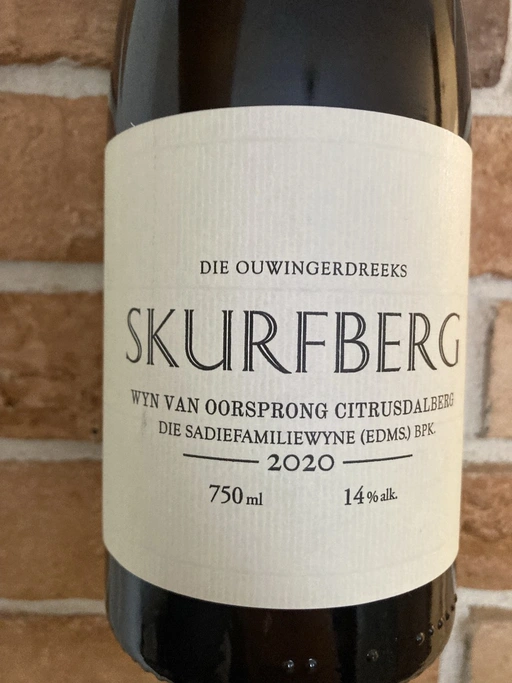
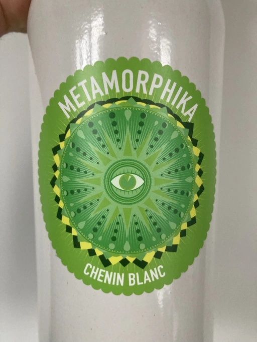
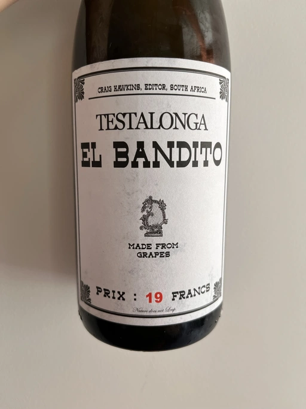

A taste of Chenin Blanc

After a long break, we decided to gather again in our cozy Kyiv office for a small wine tasting event. In the 2021 Recap, I declared that this year we are going to travel to new wine regions and focus on less popular grapes. Does Chenin Blanc fall into the category of ‘less popular’ grapes? Well, that depends on who you ask. But I hope everyone agrees that this grape is underappreciated. And it’s not as widespread as Chardonnay or Sauvignon Blanc. If you think about it, even Glera is more popular, even though most Glera drinkers have never heard about it1.
So why Chenin Blanc? Because it’s complex, versatile, and does not cost all the money. When I visit some fancy restaurant with exquisite (read absurdly expensive) wines, I usually look for a bottle of Chenin Blanc from the Loire Valley. Even if I don’t know the producer, there is a high chance to get an amazing bottle (sometimes even well-aged) for a decent price.
And you know, our goal is modest. We are here to discover our own opinion by tasting. And luckily, we have plenty of the choice, including guiding stars of the world of Chenin Blanc: Jacky Blot and Sadie. The wine list is the following.
- Testalonga El Bandito I Wish I was a Ninja 2021
- Les Vignes De Paradis Chenin 2019
- Domaine de la Taille Aux Loups Bretonniere Monopole 2017
- Sadie Family Skurfberg 2020
- Costador Metamorphika Chenin Blanc 2017
- Testalonga El Bandito Skin 2019
| Wine #1 | Wine #2 | Wine #3 | Wine #4 | Wine #5 | Wine #6 | |
|---|---|---|---|---|---|---|
| Andrii P | 4.50 | 3.70 | 5.00 | 3.00 | 2.00 | 3.00 |
| Oleksandr K | 4.00 | 3.50 | 3.80 | 3.90 | 2.50 | 3.60 |
| Elvira K | 4.00 | 3.70 | 4.10 | 4.00 | 3.60 | 3.00 |
| Alina S | 5.00 | 2.90 | 3.50 | 3.00 | 1.50 | 3.50 |
| Tetiana S | 4.90 | 3.40 | 3.50 | 2.00 | 1.00 | 3.30 |
| Dmytro S | 4.50 | 3.90 | 3.60 | 2.90 | 2.60 | 3.90 |
| Kris S | 4.50 | 2.90 | 4.00 | 4.20 | 1.50 | 4.30 |
| Andrii S | 4.00 | 3.50 | 4.10 | 4.10 | 1.30 | 4.30 |
| Boris B | 3.60 | 3.70 | 4.20 | 4.20 | 3.20 | 3.80 |
| amean | rms | sdev | favourite | outcast | price | QPR | |
|---|---|---|---|---|---|---|---|
| Wine #1 | 4.33 | 4.36 | 0.1911 | 3.00 | 2.00 | 820.00 | 4.8938 |
| Wine #2 | 3.47 | 3.48 | 0.1111 | 1.00 | 0.00 | 730.00 | 1.5215 |
| Wine #3 | 3.98 | 4.00 | 0.1951 | 3.00 | 1.00 | 1490.00 | 1.5578 |
| Wine #4 | 3.48 | 3.55 | 0.5395 | 2.00 | 0.00 | 1490.00 | 0.7570 |
| Wine #5 | 2.13 | 2.29 | 0.7156 | 0.00 | 5.00 | 745.00 | 0.3047 |
| Wine #6 | 3.63 | 3.66 | 0.2133 | 0.00 | 1.00 | 1150.00 | 1.2199 |
How to read this table:
ameanis arithmetic mean (and not ‘amen’), calculated as sum of all scores divided by count of scores for particular wine. It is more useful thantotal, because some wines are not tasted by all participants.rmsis root mean square or quadratic mean. The problem with arithmetic mean is that it is very sensitive to deviations and extreme values in data sets, meaning that even single 5 or 1 might ‘drastically’ affect the score. Without deeper explanation, RMS is picked because it is bigger than or equal to average, because it basically includes standard deviation.sdevis standard deviation. The bigger this value the more controversial the wine is, meaning that people have different opinions on this one.favouriteis amount of people who marked this wine as favourite of the event.outcastis amount of people who marked this wine as outcast of the event.priceis wine price in UAH.QPRis quality price ratio, calculated in as100 * factorial(rms)/price. The reason behind this totally unprofessional formula is simple. At some point you have to pay more and more to get a little fraction of satisfaction. Factorial used in this formula rewards scores close to the upper bound 120 times more than scores close to the lower bound.
Testalonga El Bandito I Wish I was a Ninja 2021

- producer: Testalonga
- name: El Bandito I Wish I was a Ninja
- vintage: 2021
- grapes: Colombard
- location: Bandits Kloof farm, WO Swartland, South Africa
- alcohol: 8.5
- price: 820 UAH
Don’t worry in case you didn’t notice that this wine is made of Colombard and not Chenin Blanc. I noticed only because I was looking for this information. You see, there is no mention of the grape on the bottle. And since I knew that Testalonga has several sparkling wines, each made of a different grape, I was looking specifically for this information.
So in that case you might ask - why the hell did you bring a Pét-Nat made of Colombard to a tasting event dedicated to Chenin Blanc? Ah, thank you for asking this amazing question! You see, every tasting event becomes better if you start it with some fizzy and easy wine. Besides, Colombard is an offspring of Chenin Blanc and Gouais blanc, so I figured that out!
Les Vignes De Paradis Chenin 2019

- producer: Les Vignes de Paradis
- name: Chenin
- vintage: 2019
- grapes: Chenin Blanc
- location: Lac Leman, Savoie, France
- alcohol: 13
- sugar: 1.1
- price: 730 UAH
Some might say that it’s a weird choice of wine because Dominique Lucas is a known enthusiast of Chasselas. Yet he owns small parcels of Savagnin, Pinot Gris, Gamay, Chardonnay, and Chenin Blanc. So there are several reasons for this wine’s presence today. First of all, I wanted to bring a bottle of Chenin Blanc from France, but also not from the Loire Valley. This one is from Lac Leman, Savoie, which has a fabulous location. Just google it, look around for mountains and imagine these vineyards. Secondly, I wanted to bring low intervention style Chenin from France. And lastly, availability these days is not that good…
Domaine de la Taille Aux Loups Bretonniere Monopole 2017

- producer: Domaine de la Taille Aux Loups
- name: Bretonniere Monopole
- vintage: 2017
- grapes: Chenin Blanc
- location: Montlouis, Loire Valley, France
- alcohol: 13
- sugar: 2
- price: N/A
In Loire Valley there are three important appellations when it comes to Chenin Blanc - Anjou AOC, Vouvray AOC and Montlouis AOC. The latest is located just across the river from Vouvray AOC and has been a more dynamic appellation, not least thanks to ambitious and active winemakers - Jacky Blot and Françoise Chidaine. So today we have a bottle of Chenin Blanc from the very Jacky Blot! It is common practice for producers to label their still wines by site, especially their top ones. So this one is Bretonniere Monopole - all grapes are from the same site.
What else to tell? This is a wine that has to be tasted and not talked about.
Sadie Family Skurfberg 2020

- producer: Sadie Family
- name: Skurfberg
- vintage: 2020
- grapes: Chenin Blanc
- location: WO Citrusdalberg, South Africa
- alcohol: 14
- sugar: 2.4
- price: 1490 UAH
Made of 100% Steen (South African synonym for Chenin Blanc) from Citrusdal Mountain, which is located in Swartland. Crafted by legendary Eben Sadie, Enfant terrible, and “one of the greatest and most original winemakers in the southern hemisphere”. Wait, don’t listed to me. His wines needs to be tasted and not talked about.
Yet one small detail. The wine is left in cask on the fermentation lees for 12 months and bottled from the lees. This is important. Now make a sip!
Costador Metamorphika Chenin Blanc 2017

- producer: Costador
- name: Metamorphika Chenin Blanc
- vintage: 2017
- grapes: Chenin Blanc
- location: Catalunya DO, Spain
- alcohol: 14
- sugar: 1
- price: N/A
Yup, Chenin Blanc is planted not only in France and South Africa. It found a home in the USA, Canada, Mexico, Argentina, Brazil, Uruguay, Australia, New Zealand, Israel… And Spain! Costador is known for working with 20+ grapes, some of them are on the brink of extinction. Planted above 800m of altitude, spontaneous fermentation with indigenous yeast in amphorae, and served… in these bottles that you can’t miss.
Testalonga El Bandito Skin 2019

- producer: Testalonga
- name: El Bandito Skin
- vintage: 2019
- grapes: Chenin Blanc
- location: Bandits Kloof farm, WO Swartland, South Africa
- alcohol: 12
- sugar: 2
- price: 1150 UAH
Chenin Blanc for this wine was planted in 1972! And of course, the last wine of the evening is macerated Chenin Blanc! Remember, I said that it’s versatile? Thank me for not bringing sweet wine.
Nevertheless, it’s worth mentioning how orange wines started their life in South Africa. Craig & Carla Hawkins, without any doubt, are revolutionizing the South African wine industry. After long years of traveling around the world and making wines in known and established wineries (like Matassa and Niepoort Vinhos S.A.), they decided to settle down in Swartland and start their own winery. The year was 2008, and they produced 2 barrels of macerated Chenin Blanc. It is considered the first macerated wine in the whole of South Africa. They had to fight for the right to export their wines as regulators were against letting these wines out to the market. All those sediments and other traces of low intervention winemaking were quite suspicious back then. But there is nothing to spoil, as Craig and Carla are famous in the wine world.
As they say, ‘made from grapes’. And nothing more (except for a tiny bit of sulfites).
Conclusions
The results are stunning. The wine with the highest score is Testalonga El Bandito I Wish I was a Ninja 2021 with a 4.33 average score. No wait, you probably don’t understand. During the last year, the highest score of Pét-Nats was 3.33. So you can’t call us proponents of the Metodo Ancestrale. No, even more. Such a high score puts this wine in the top 5. Stunning. We were really hungry for wine.
The other thing that amazes me is that Domaine de la Taille Aux Loups Bretonniere Monopole 2017 is sharing the first place as the favourite wine of the evening. Complex, even shy, it still found its connoisseurs.
And most importantly, despite all odds, we gathered for a small and cozy event. I thank all the participants, for emotions, for opinions and for time together. See you next time!
Alright, alright. I am talking about Prosecco.↩︎